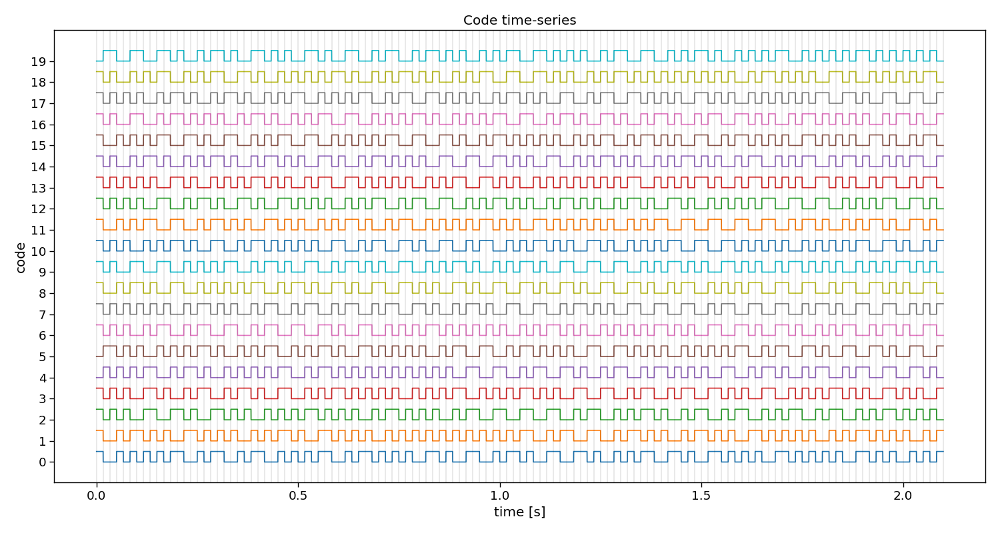
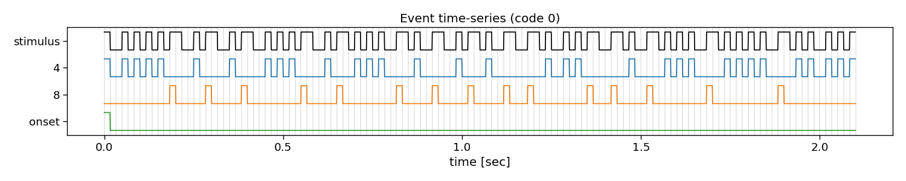
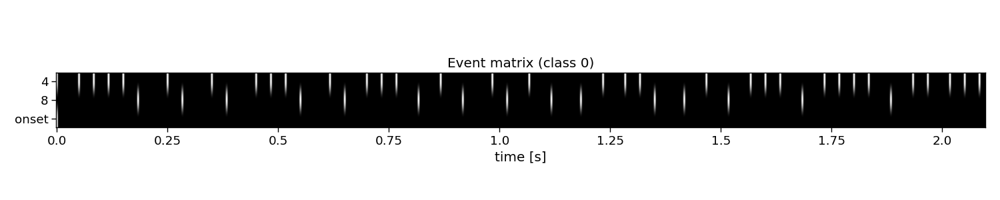

Note
Go to the end to download the full example code
rCCA
This script shows how to use rCCA from PyntBCI for decoding c-VEP trials. The rCCA method uses a template matching classifier where templates are estimated using reconvolution and canonical correlation analysis (CCA).
The data used in this script come from Thielen et al. (2021), see references [1] and [2].
References
import os
import matplotlib.pyplot as plt
import numpy as np
import seaborn
import pyntbci
seaborn.set_context("paper", font_scale=1.5)
Set the data path
The cell below specifies where the dataset has been downloaded to. Please, make sure it is set correctly according to the specification of your device. If none of the folder structures in the dataset were changed, the cells below should work just as fine.
path = os.path.join(os.path.dirname(pyntbci.__file__)) # path to the dataset
subject = "sub-01" # the subject to analyse
The data
The dataset consists of (1) the EEG data X that is a matrix of k trials, c channels, and m samples; (2) the labels y that is a vector of k trials; (3) the pseudo-random noise-codes V that is a matrix of n classes and m samples. Note, the codes are upsampled to match the EEG sampling frequency and contain only one code-cycle.
# Load data
fn = os.path.join(path, "data", f"thielen2021_{subject}.npz")
tmp = np.load(fn)
X = tmp["X"]
y = tmp["y"]
V = tmp["V"]
fs = tmp["fs"]
fr = 60
print("X", X.shape, "(trials x channels x samples)") # EEG
print("y", y.shape, "(trials)") # labels
print("V", V.shape, "(classes, samples)") # codes
print("fs", fs, "Hz") # sampling frequency
print("fr", fr, "Hz") # presentation rate
# Extract data dimensions
n_trials, n_channels, n_samples = X.shape
n_classes = V.shape[0]
# Read cap file
capfile = os.path.join(path, "capfiles", "thielen8.loc")
with open(capfile, "r") as fid:
channels = []
for line in fid.readlines():
channels.append(line.split("\t")[-1].strip())
print("Channels:", ", ".join(channels))
# Visualize EEG data
i_trial = 0 # the trial to visualize
plt.figure(figsize=(15, 5))
plt.plot(np.arange(0, n_samples) / fs, 25e-6 * np.arange(n_channels) + X[i_trial, :, :].T)
plt.xlim([0, 1]) # limit to 1 second EEG data
plt.yticks(25e-6 * np.arange(n_channels), channels)
plt.xlabel("time [sec]")
plt.ylabel("channel")
plt.title(f"Single-trial multi-channel EEG time-series (trial {i_trial})")
plt.tight_layout()
# Visualize labels
plt.figure(figsize=(15, 3))
hist = np.histogram(y, bins=np.arange(n_classes + 1))[0]
plt.bar(np.arange(n_classes), hist)
plt.xticks(np.arange(n_classes))
plt.xlabel("label")
plt.ylabel("count")
plt.title("Single-trial labels")
plt.tight_layout()
# Visualize stimuli
Vup = V.repeat(20, axis=1) # upsample to better visualize the sharp edges
plt.figure(figsize=(15, 8))
plt.plot(np.arange(Vup.shape[1]) / (20 * fs), 2 * np.arange(n_classes) + Vup.T)
for i in range(1 + int(V.shape[1] / (fs / fr))):
plt.axvline(i / fr, c="k", alpha=0.1)
plt.yticks(2 * np.arange(n_classes), np.arange(n_classes))
plt.xlabel("time [sec]")
plt.ylabel("code")
plt.title("Code time-series")
plt.tight_layout()


- 
X (100, 8, 2520) (trials x channels x samples)
y (100,) (trials)
V (20, 504) (classes, samples)
fs 240 Hz
fr 60 Hz
Channels: Fpz, T7, O1, POz, Oz, Iz, O2, T8
The event matrix
The first step for reconvolution is to find within the sequences the repetitive events. This can be imposed “manually” by choosing the event definition that we believe the brain responds to. Here, the so-called “duration” event is used, which marks the length of a flash as the important piece of information. As the sequences in this dataset were modulated, there are only two events: a short and a long flash. Additionally, a third event is added that will account for the onset of a trial, during which all of a sudden the screen started flashing. The event matrix is a matrix of n classes, e events, and m samples.
Please, note that more event definitions exist, which can be explored with the event variable of rCCA. For instance, event=”contrast” is a useful event definition as well, which looks at rising and falling edges, generalising over the length of a flash.
# Create event matrix
E, events = pyntbci.utilities.event_matrix(V, event="duration", onset_event=True)
print("E:", E.shape, "(classes x events x samples)")
print("Events:", ", ".join([str(event) for event in events]))
# Visualize event time-series
i_class = 0 # the class to visualize
fig, ax = plt.subplots(1, 1, figsize=(15, 3))
pyntbci.plotting.eventplot(V[i_class, ::int(fs/fr)], E[i_class, :, ::int(fs/fr)], fs=fr, ax=ax, events=events)
ax.set_title(f"Event time-series (code {i_class})")
plt.tight_layout()
# Visualize event matrix
i_class = 0
plt.figure(figsize=(15, 3))
plt.imshow(E[i_class, :, :], cmap="gray")
plt.gca().set_aspect(10)
plt.xticks(np.arange(0, E.shape[2], 60), np.arange(0, E.shape[2], 60) / fs)
plt.yticks(np.arange(E.shape[1]), events)
plt.xlabel("time [sec]")
plt.title(f"Event matrix (class {i_class})")
plt.tight_layout()
- 
- 
E: (20, 3, 504) (classes x events x samples)
Events: 4, 8, onset
The structure matrix
The second step for reconvolution is to model the expected responses associated to each of the events and their overlap. This is done in the so-called structure matrix (or design matrix). The structure matrix is essentially a Toeplitz version of the event matrix. It allows to model the c-VEP as the dot product of r (the transient response to an event) and M (the structure matrix for a specific class) for the ith class. The structure matrix is a matrix of n classes, l response samples, and m samples.
An important parameter here is the encoding_length argument. An easy abstraction is to assume the same length for the responses to each of the events. However, one could also set different lengths for each of the events.
# Create structure matrix
encoding_length = int(0.3 * fs) # 300 ms responses
M = pyntbci.utilities.encoding_matrix(E, encoding_length)
print("M: shape:", M.shape, "(classes x encoding_length*events x samples)")
# Plot structure matrix
i_class = 0 # the class to visualize
plt.figure(figsize=(15, 6))
plt.imshow(M[i_class, :, :], cmap="gray")
plt.xticks(np.arange(0, M.shape[2], 60), np.arange(0, M.shape[2], 60) / fs)
plt.yticks(np.arange(0, E.shape[1] * encoding_length, 12), np.tile(np.arange(0, encoding_length, 12) / fs, E.shape[1]))
plt.xlabel("time [sec]")
plt.ylabel(events[::-1])
plt.title(f"Structure matrix (class {i_class})")
plt.tight_layout()
M: shape: (20, 216, 504) (classes x encoding_length*events x samples)
Reconvolution CCA
The full reconvolution CCA (rCCA) pipeline is implemented as a scikit-learn compatible class in PyntBCI in pyntbci.classifiers.rCCA. All it needs are the binary sequences stimulus, the sampling frequency fs, the event definition event, the transient response size encoding_length and whether or not to include an event for the onset of a trial onset_event.
When calling rCCA.fit(X, y) with training data X and labels y, the full decomposition is performed to obtain spatial filters rCCA.w_ and temporal filter rCCA.r_.
Please note that the transient responses are concatenated in this temporal filter rCCA.r_. One can use rCCA.events_ to disentangle these and find which response is associated to which event.
# Perform CCA
encoding_length = 0.3 # 300 ms responses
rcca = pyntbci.classifiers.rCCA(stimulus=V, fs=fs, event="duration", encoding_length=encoding_length, onset_event=True)
rcca.fit(X, y)
print("w: ", rcca.w_.shape, "(channels)")
print("r: ", rcca.r_.shape, "(encoding_length*events)")
# Plot CCA filters
fig, ax = plt.subplots(1, 2, figsize=(15, 3))
pyntbci.plotting.topoplot(rcca.w_, capfile, ax=ax[0])
ax[0].set_title("spatial filter")
tmp = np.reshape(rcca.r_, (len(rcca.events_), -1))
for i in range(len(rcca.events_)):
ax[1].plot(np.arange(int(encoding_length * fs)) / fs, tmp[i, :])
ax[1].legend(rcca.events_)
ax[1].set_xlabel("time [sec]")
ax[1].set_ylabel("amplitude [a.u.]")
ax[1].set_title("Transient responses")
fig.tight_layout()
w: (8, 1) (channels)
r: (216, 1) (encoding_length*events)
Cross-validation
To perform decoding, one can call rCCA.fit(X_trn, y_trn) on training data X_trn and labels y_trn and rCCA.predict(X_tst) on testing data X_tst. In this section, a chronological cross-validation is setup to evaluate the performance of rCCA.
trialtime = 4.2 # limit trials to a certain duration in seconds
intertrialtime = 1.0 # ITI in seconds for computing ITR
n_samples = int(trialtime * fs)
# Chronological cross-validation
n_folds = 5
folds = np.repeat(np.arange(n_folds), int(n_trials / n_folds))
# Loop folds
accuracy = np.zeros(n_folds)
for i_fold in range(n_folds):
# Split data to train and test set
X_trn, y_trn = X[folds != i_fold, :, :n_samples], y[folds != i_fold]
X_tst, y_tst = X[folds == i_fold, :, :n_samples], y[folds == i_fold]
# Train template-matching classifier
rcca = pyntbci.classifiers.rCCA(stimulus=V, fs=fs, event="duration", encoding_length=0.3, onset_event=True)
rcca.fit(X_trn, y_trn)
# Apply template-matching classifier
yh_tst = rcca.predict(X_tst)
# Compute accuracy
accuracy[i_fold] = np.mean(yh_tst == y_tst)
# Compute ITR
itr = pyntbci.utilities.itr(n_classes, accuracy, trialtime + intertrialtime)
# Plot accuracy (over folds)
plt.figure(figsize=(15, 3))
plt.bar(np.arange(n_folds), accuracy)
plt.axhline(accuracy.mean(), linestyle='--', alpha=0.5, label="average")
plt.axhline(1 / n_classes, color="k", linestyle="--", alpha=0.5, label="chance")
plt.xlabel("(test) fold")
plt.ylabel("accuracy")
plt.legend()
plt.title("Chronological cross-validation")
plt.tight_layout()
# Print accuracy (average and standard deviation over folds)
print(f"Accuracy: avg={accuracy.mean():.2f} with std={accuracy.std():.2f}")
print(f"ITR: avg={itr.mean():.1f} with std={itr.std():.2f}")
Accuracy: avg=1.00 with std=0.00
ITR: avg=49.9 with std=0.00
Learning curve
In this section, we will apply the decoder to varying number of training trials, to estimate a so-called learning curve. With this information, one could decide how much training data is required, or compare algorithms on how much training data they require to estimate their parameters.
trialtime = 4.2 # limit trials to a certain duration in seconds
n_samples = int(trialtime * fs)
# Chronological cross-validation
n_folds = 5
folds = np.repeat(np.arange(n_folds), int(n_trials / n_folds))
# Set learning curve axis
train_trials = np.arange(1, 1 + np.sum(folds != 0))
n_train_trials = train_trials.size
# Loop folds
accuracy = np.zeros((n_folds, n_train_trials))
for i_fold in range(n_folds):
# Split data to train and test set
X_trn, y_trn = X[folds != i_fold, :, :n_samples], y[folds != i_fold]
X_tst, y_tst = X[folds == i_fold, :, :n_samples], y[folds == i_fold]
# Loop train trials
for i_trial in range(n_train_trials):
# Train classifier
rcca = pyntbci.classifiers.rCCA(stimulus=V, fs=fs, event="duration", encoding_length=0.3, onset_event=True)
rcca.fit(X_trn[:train_trials[i_trial], :, :], y_trn[:train_trials[i_trial]])
# Apply classifier
yh_tst = rcca.predict(X_tst)
# Compute accuracy
accuracy[i_fold, i_trial] = np.mean(yh_tst == y_tst)
# Plot results
plt.figure(figsize=(15, 3))
avg = accuracy.mean(axis=0)
std = accuracy.std(axis=0)
plt.plot(train_trials * trialtime, avg, linestyle='-', marker='o', label="rCCA")
plt.fill_between(train_trials * trialtime, avg + std, avg - std, alpha=0.2, label="_rCCA")
plt.axhline(1 / n_classes, color="k", linestyle="--", alpha=0.5, label="chance")
plt.xlabel("learning time [sec]")
plt.ylabel("accuracy")
plt.legend()
plt.title("Learning curve")
plt.tight_layout()
Decoding curve
In this section, we will apply the decoder to varying testing trial lengths, to estimate a so-called decoding curve. With this information, one could decide how much testing data is required, or compare algorithms on how much data they need during testing to classify single-trials.
trialtime = 4.2 # limit trials to a certain duration in seconds
intertrialtime = 1.0 # ITI in seconds for computing ITR
n_samples = int(trialtime * fs)
# Chronological cross-validation
n_folds = 5
folds = np.repeat(np.arange(n_folds), int(n_trials / n_folds))
# Set decoding curve axis
segmenttime = 0.1 # step size of the decoding curve in seconds
segments = np.arange(segmenttime, trialtime, segmenttime)
n_segments = segments.size
# Loop folds
accuracy = np.zeros((n_folds, n_segments))
for i_fold in range(n_folds):
# Split data to train and test set
X_trn, y_trn = X[folds != i_fold, :, :n_samples], y[folds != i_fold]
X_tst, y_tst = X[folds == i_fold, :, :n_samples], y[folds == i_fold]
# Setup classifier
rcca = pyntbci.classifiers.rCCA(stimulus=V, fs=fs, event="duration", encoding_length=0.3, onset_event=True)
# Train classifier
rcca.fit(X_trn, y_trn)
# Loop segments
for i_segment in range(n_segments):
# Apply classifier
yh_tst = rcca.predict(X_tst[:, :, :int(fs * segments[i_segment])])
# Compute accuracy
accuracy[i_fold, i_segment] = np.mean(yh_tst == y_tst)
# Compute ITR
time = np.tile(segments[np.newaxis, :], (n_folds, 1))
itr = pyntbci.utilities.itr(n_classes, accuracy, time + intertrialtime)
# Plot results
fig, ax = plt.subplots(2, 1, figsize=(15, 5), sharex=True)
avg = accuracy.mean(axis=0)
std = accuracy.std(axis=0)
ax[0].plot(segments, avg, linestyle='-', marker='o', label="rCCA")
ax[0].fill_between(segments, avg + std, avg - std, alpha=0.2, label="_rCCA")
ax[0].axhline(1 / n_classes, color="k", linestyle="--", alpha=0.5, label="chance")
avg = itr.mean(axis=0)
std = itr.std(axis=0)
ax[1].plot(segments, avg, linestyle='-', marker='o', label="rCCA")
ax[1].fill_between(segments, avg + std, avg - std, alpha=0.2, label="_rCCA")
ax[1].set_xlabel("decoding time [sec]")
ax[0].set_ylabel("accuracy")
ax[1].set_ylabel("ITR [bits/min]")
ax[0].legend()
ax[0].set_title("Decoding curve")
fig.tight_layout()
Analyse multiple participants
# Set paths
path = os.path.join(os.path.dirname(pyntbci.__file__))
n_subjects = 5
subjects = [f"sub-{1 + i:02d}" for i in range(n_subjects)]
# Set trial duration
trialtime = 4.2 # limit trials to a certain duration in seconds
n_trials = 100 # limit the number of trials in the dataset
# Chronological cross-validation
n_folds = 5
folds = np.repeat(np.arange(n_folds), int(n_trials / n_folds))
# Loop participants
accuracy = np.zeros((n_subjects, n_folds))
for i_subject in range(n_subjects):
subject = subjects[i_subject]
# Load data
fn = os.path.join(path, "data", f"thielen2021_{subject}.npz")
tmp = np.load(fn)
fs = tmp["fs"]
X = tmp["X"][:n_trials, :, :int(trialtime * fs)]
y = tmp["y"][:n_trials]
V = tmp["V"]
# Cross-validation
for i_fold in range(n_folds):
# Split data to train and test set
X_trn, y_trn = X[folds != i_fold, :, :], y[folds != i_fold]
X_tst, y_tst = X[folds == i_fold, :, :], y[folds == i_fold]
# Train classifier
rcca = pyntbci.classifiers.rCCA(stimulus=V, fs=fs, event="duration", encoding_length=0.3, onset_event=True)
rcca.fit(X_trn, y_trn)
# Apply classifier
yh_tst = rcca.predict(X_tst)
# Compute accuracy
accuracy[i_subject, i_fold] = np.mean(yh_tst == y_tst)
# Add average to accuracies
subjects += ["avg"]
avg = np.mean(accuracy, axis=0, keepdims=True)
accuracy = np.concatenate((accuracy, avg), axis=0)
# Plot accuracy
plt.figure(figsize=(15, 5))
avg = accuracy.mean(axis=1)
std = accuracy.std(axis=1)
plt.bar(np.arange(1 + n_subjects) + 0.3, avg, 0.5, yerr=std, label="rCCA")
plt.axhline(accuracy.mean(), linestyle="--", alpha=0.5, label="average")
plt.axhline(1 / n_classes, linestyle="--", color="k", alpha=0.5, label="chance")
plt.table(cellText=[np.round(avg, 2), np.round(std, 2)], loc='bottom', rowLabels=["avg", "std"], colLabels=subjects,
cellLoc="center")
plt.subplots_adjust(left=0.2, bottom=0.2)
plt.xticks([])
plt.ylabel("accuracy")
plt.xlim([-0.25, n_subjects + 0.75])
plt.legend()
plt.title("Decoding performance full dataset")
plt.tight_layout()
# Print accuracy
print(f"Average accuracy: {avg.mean():.2f}")
# plt.show()
Average accuracy: 0.98
Total running time of the script: (1 minutes 57.351 seconds)